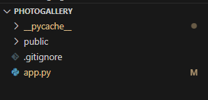

Creating our Backend
Table of contents
 FastAPI
FastAPI
For our Web Development Starter Kit, we’ll be utilizing FastAPI, an essential toolkit for those creating websites and web applications. Consider FastAPI as a collection of foundational tools that developers employ to build and manage the unseen components of websites or apps. These components are crucial for functions like securely transmitting your data during sign-ups or log-ins.
While there are other frameworks like Flask, Django, and Tornado, each serving distinct purposes, FastAPI stands out for its ease of use and robust built-in features. This means you can achieve more with less coding effort, making it an excellent choice for both quick website deployment and for those new to web development, thanks to its gentle learning curve.
Complete Getting Started before doing this.
Photogallery Backend
Create an app.py file at the root level of your project folder. Inside of it, copy these lines of code.
from fastapi import FastAPI, Request, HTTPException
from fastapi.responses import HTMLResponse, JSONResponse
from fastapi.staticfiles import StaticFiles
from fastapi.templating import Jinja2Templates
from pydantic import BaseModel
import uvicorn
app = FastAPI()
static_files = StaticFiles(directory='public')
views = Jinja2Templates(directory="public/views")
app.mount('/public', static_files, name='public')
app.mount("/css", StaticFiles(directory="public/css"), name="css")
app.mount("/js", StaticFiles(directory="public/js"), name="js")
class Image(BaseModel):
title: str
description: str
src: str
images = {}
@app.get('/', response_class=HTMLResponse)
def get_home(request: Request) -> HTMLResponse:
return views.TemplateResponse("main.html", {"request": request, "images": images})
@app.post("/images", response_class=JSONResponse)
def post_image(img_data: Image):
# add data
img_id = len(images) + 1
images.update({img_id: img_data})
return {"img_id": img_id, **img_data.dict()}
@app.put("/images/{img_id}", response_class=JSONResponse)
def modify_image(img_id: int, img_data: Image):
#modify data
if img_id in images:
images.update({img_id: img_data})
return images[img_id]
raise HTTPException(status_code=404, detail="Image not found")
@app.delete('/images/{img_id}', response_class=JSONResponse)
def delete_img(img_id: int):
if img_id in images:
return images.pop(img_id)
raise HTTPException(status_code=404, detail="Image not found")
if __name__ == "__main__":
uvicorn.run("app:app", host="127.0.0.1", port=8007, reload=True)
Understanding The Code
Importing Tools We Need
from fastapi import FastAPI, Request, HTTPException
from fastapi.responses import HTMLResponse, JSONResponse
from fastapi.staticfiles import StaticFiles
from fastapi.templating import Jinja2Templates
import uvicorn
- FastAPI: This is the main tool for building our web server.
- Request: This allows us to see what the user is asking for. For example, if someone wants to view a specific photo, ‘Request’ helps us figure out which photo they want.
- HTTPException: Sometimes things go wrong (like if someone asks for a photo that doesn’t exist). This lets us handle such errors by responding with an appropriate error message.
- HTMLResponse: When we want to send back a whole webpage.
- JSONResponse: When we want to send back just some information, not a full page, in a structured format. JSON is a way of organizing data that’s easy for both humans and - computers to read.
- StaticFiles: This is used to manage files that don’t change often, like pictures, stylesheets (CSS files), or JavaScript files.
- Jinja2Templates: Helps us dynamically create HTML pages. For example, if you want to show a photo with a title and description, Jinja2 can generate a webpage on the fly using a template.
- uvicorn: This is the program that runs our FastAPI app. It’s like the engine that powers our assistant.
Organization of Files
You have to create these folders at the root of project, which is the folder you opened when creating the project. You can see what your root is by looking at what folder you’re in.
In this image, we’re in the Photogallery root.

app = FastAPI()
static_files = StaticFiles(directory='public')
views = Jinja2Templates(directory="public/views")
app.mount('/public', static_files, name='public')
app.mount("/css", StaticFiles(directory="public/css"), name="css")
app.mount("/js", StaticFiles(directory="public/js"), name="js")
- app = FastAPI(): Starts our web server.
- StaticFiles: Tells our server where to find static files. We organize files into directories, much like folders on a computer.
- Jinja2Templates: Sets up where to find HTML templates for generating web pages.
- app.mount(…): This makes these directories available to our server so it can access them when needed.
Creating a Data Model
class Image(BaseModel):
title: str
description: str
src: str
images = {}
- Image: This acts like a form that defines what information a photo needs before it can be added to our album: a title, a description, and a source (src, where the photo is stored).
We’re going to keep the information contained within Image in a dictionary as defined by images = {}
RESTful Routes
@app.get('/', response_class=HTMLResponse)
def get_home(request: Request) -> HTMLResponse:
return views.TemplateResponse("main.html", {"request": request, "images": images})
@app.post("/images", response_class=JSONResponse)
def post_image(img_data: Image):
# add data
img_id = len(images) + 1
images.update({img_id: img_data})
return {"img_id": img_id, **img_data.dict()}
@app.put("/images/{img_id}", response_class=JSONResponse)
def modify_image(img_id: int, img_data: Image):
#modify data
if img_id in images:
images.update({img_id: img_data})
return images[img_id]
raise HTTPException(status_code=404, detail="Image not found")
@app.delete('/images/{img_id}', response_class=JSONResponse)
def delete_img(img_id: int):
if img_id in images:
return images.pop(img_id)
raise HTTPException(status_code=404, detail="Image not found")
- @app.get(‘/’): This tells our web server to listen for requests to the home page (like when someone visits the main URL of our digital album).
- response_class=HTMLResponse: We’re saying that our response will be an HTML page.
-
get_home: This is the function that runs when someone visits the home page. It uses a template to create a webpage that shows all the photos.
- @app.post(“/images”): This sets up a way for users to add new photos. ‘Post’ is used when the user is sending us new data (like uploading a photo).
-
response_class=JSONResponse: Indicates the server will respond with data in JSON format, confirming the photo was added.
- @app.put and @app.delete: These are for updating and deleting photos, respectively. ‘Put’ is used for changes, while ‘Delete’ is for removing photos.
- {img_id}: This is a placeholder in the URL for the specific photo’s ID. It tells the server which photo to update or delete.